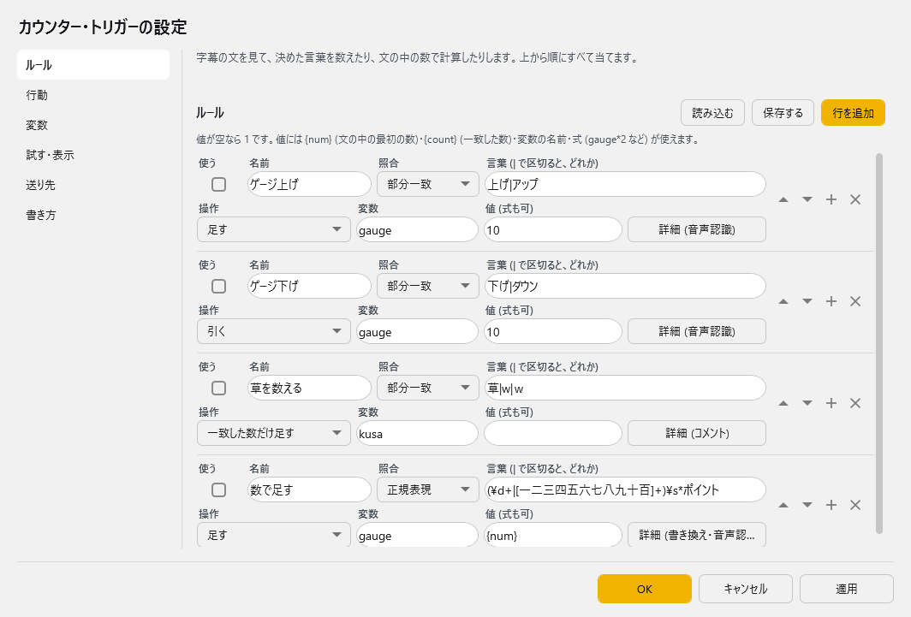

カウンター・トリガー¶
ゆかコネNEO v3.0 のドキュメントです。このプラグインは v3.0 で新しく入ったもの（ゆかコネNEO v3.0.8 から）で、v2.3 にはありません。v2.3 との違いは v2.3 から v3.0 への移行 をご覧ください。
前提条件
- これだけで動きます。ほかに入れるものはありません
- 行動によっては、OBS 連携・効果音・わんコメ連携・Twitch 連携・ニコニコ生放送連携・VRChat 連携のプラグインを「使う」にしておきます
このプラグインで出来ること¶
字幕の文を見て、言葉を数える・計算する・覚える → その値を テンプレートと OBS へ出す → 値が条件を満たしたら 行動する、という流れを作れます。
- 決めた言葉を数えます（部分一致／完全一致／正規表現）。コメントの「草」を数える、なども
- 文の中の数（「5 ポイント」「三十ポイント」のような漢数字・全角も）を読んで、足したり引いたりします
- 言った文字を覚えておき、あとで差し込めます
- 値をゲージにして OBS のブラウザソースに出したり、OBS のテキストへ送ったりします
- 値が決めた数を超えたら、シーンを切り替える・効果音を鳴らす・コメントを送る・読み上げる などの行動をします
たとえば、こんな使い方ができます。
- 「上げ」と言うたびにゲージが 10 上がり、「下げ」で下がる。100 になったらシーンを切り替えて、5 秒後に 0 へ戻す
- コメントの「草」を数えて、OBS のテキストに「草 123」と出す
- 「5 ポイント」「三十ポイント」と言った数をゲージに足し、字幕の後ろに「(ゲージ 65)」と付ける
プラグインが要るとき・要らないとき¶
字幕デザインの「カウンター連動」にあるテンプレート 7 本（風船割り・ボス戦・コンボ・星屑の瓶・綱引き・ゲージ・ワードバトル）は本体に入っていて、 「このテンプレート」タブの 数える言葉 の表だけで言葉を数えられます。数えて画面に見せるだけなら、このプラグインは要りません。
| やりたいこと | 要るもの |
|---|---|
| 言葉を数えて、風船・ボス・ゲージなどで見せたい | テンプレートだけ（テンプレートだけで遊ぶ） |
| 声でお題に答えるゲームをしたい | テンプレート「ワードバトル」だけ（レイアウトについて - ワードバトル） |
| 文の中の数で計算したい・文字を覚えたい・字幕を書き換えたい | このプラグイン |
| 決めた数でシーン切替・効果音・コメント送付などの行動をしたい | このプラグイン |
| テンプレートをプラグインのルールで数えた変数で動かしたい（「数え方」を プラグインの変数 (上級) にする） | このプラグイン |
まずはテンプレートだけで試して、計算や行動もしたくなったら、このプラグインを使ってください。
有効化¶
上のタブ プラグイン → プラグインを追加 で、ジャンル 「API・ツール拡張」 の カウンター・トリガー を選んで 追加する を押してください（一覧の 使う が ON になります）。手順は プラグインの有効化 をご覧ください。
はじめて使うときは見本の行が入ります
初めて有効にすると、ルール・行動・変数の表に見本の行が入ります（ゲージを上げ下げする・草を数える・数で足す・満タンでシーンを切り替える など）。 見本はどれも 「使う」を切ってあるので、入っただけでは何も起きません。使いたい行の「使う」を入れ、宛先（シーン名など）を自分の環境に合わせてください。
しくみ¶
設定は 3 つの表 でできています。
| 表 | 1 行でやること |
|---|---|
| 変数 | 数えた値や覚えた文字の置き場。名前・種類（数／文字）・初期値・最小・最大を決めます |
| ルール | 字幕の文を見て、決めた言葉に一致したら変数をどう変えるか（足す・引く・値を入れる など）と、字幕をどう書き換えるか |
| 行動 | いつ（変数の値が条件を満たした／変わった／ルールに一致した／手動）と、何をするか（シーン切替・効果音・コメント送付 など） |
流れは「ルールが変数を変える → 変わった値を見て行動が動く」です。変数の値は、テンプレートや OBS へいつも出ています。
設定¶
プラグイン一覧で、このプラグインの名前の右にある 「設定」 を押すと開きます。 画面は 6 ページに分かれていて、左の一覧で切り替えます（ルール／行動／変数／試す・表示／送り先／書き方）。
閉じるときの 3 択
設定は下書きとして持たれ、「OK」か「適用」を押すまで動いているプラグインには効きません。 変更したまま閉じようとすると「変更が保存されていません」と聞かれ、［はい］保存して閉じる／［いいえ］破棄して閉じる／［キャンセル］閉じるのをやめる から選べます。

表を作る順番
ルールは「変数」の名前を使うので、変数 → ルール → 行動 の順に作ると迷いません。
変数¶
数えた値や覚えた文字の置き場です。ルールが使う名前を、ここで先に決めておきます。 ページの上に いまの値 が出ます。
| 列 | 説明 |
|---|---|
| 名前 | ルールや差し込み口で使う名前です（例: gauge）。英数字にしておくと扱いやすくなります |
| 種類 | 数 か 文字 |
| 初期値 | 最初の値と、「初期値に戻す」で戻る値です。既定：0 |
| 最小 / 最大 | 空なら決めません。ゲージに使う変数は最大を入れると割合（%）が出ます。文字の変数では、最大は文字数の上限です |
| 再起動しても残す | 入れると、ゆかコネNEO を閉じても値を覚えておきます。既定：ON |
「すべて初期値に戻す」 ボタンで、全部の変数を初期値に戻せます。戻したことで行動が動くことがあります（「0 以下になったら」など）。
ルール¶
字幕の文を見て、決めた言葉を数えたり、文の中の数で計算したりします。上から順にすべて当てます（当たったところで止まりません）。
| 列 | 説明 |
|---|---|
| 使う | 切ると、その行は使いません |
| 名前 | ルールの名前です。行動の「ルールに一致したとき」で使います |
| 照合 | 部分一致／完全一致／正規表現 |
| 言葉 (| で区切ると、どれか) | 探す言葉です。上げ|アップ のように縦棒で区切ると、どれか 1 つで当たります |
| 操作 | 一致した数だけ足す／足す／引く／かける／割る／値を入れる／初期値に戻す／文字を後ろに足す／文字を前に足す／文字を消す／何もしない |
| 変数 | 変える変数の名前です |
| 値 (式も可) | 足す数などです。空なら 1。{num}（文の中の最初の数）・{count}（一致した数）・変数の名前・式（gauge*2 など）が使えます |
| 詳細 | 字幕の書き換え・見る文・出どころ・待ち時間を決めるパネルが右に開きます（下の表） |
「詳細」のパネル
| 項目 | 説明 |
|---|---|
| 書き換え方 | 書き換えない／一致した部分を置き換える／文の後ろに足す／文全体を置き換える。原文を見るルールだけで使えます（訳文を見るルールでは書き換えません） |
| 書き換えた後の文 | {gauge} のように変数を差し込めます。{match} は一致した部分です。変数は、このルールで変えた後の値になります |
| 見る文 | 原文 (認識した文)／訳文。訳文を見ると、翻訳が終わるまで数えるのが遅れます。シーン切替のような急ぐ行動には原文を使ってください |
| 出どころ | すべて／音声認識／コメント／API・ほかのプラグイン。コメントで数えるときは「コメント」、配信者の声だけにしたいときは「音声認識」にします |
| 次に数えるまでの待ち時間 | この秒数のあいだ、同じルールは一致しても数えません。0 なら毎回数えます |
照合のこまかい決まり
- 全角の英数字は半角とみなし、大文字・小文字は区別しません
- 完全一致は、文の前後の空白と句読点を無視します
- 原文を見るルールは、文が確定した時点で照合します（翻訳を待ちません）
行動¶
変数の値やルールの一致をきっかけに、シーン切替・効果音・コメント送付などをします。
| 列 | 説明 |
|---|---|
| 使う | 切ると、その行は使いません |
| 名前 | 行動の名前です。手動で動かすときに使います |
| いつ | 変数の値が条件を満たしたとき／変数が変わったとき／ルールに一致したとき／手動 (ボタン・命令・MCP) |
| 変数 / ルール | 見る変数の名前（「ルールに一致したとき」はルールの名前） |
| 比べ方 | 以上／以下／等しい／等しくない／より大きい／より小さい／文字を含む |
| 値 | 比べる相手の値です |
| 行動 | 何をするか（下の表） |
| 宛先 / 内容 | 行動ごとに意味が違います（下の表）。内容には {gauge} のように変数を差し込めます |
| 詳細 | 繰り返し方・待ち時間・遅らせる秒数を決めるパネルが右に開きます |
行動ごとの宛先と内容
| 行動 | 宛先 | 内容 | 要るもの |
|---|---|---|---|
| OBS のシーンを切り替える | シーン名 | — | 「OBS 連携 (v5)」か「OBS 連携」を「使う」 |
| OBS のテキストへ送る | テキストソースの名前 | 送る文 | OBS 連携のプラグイン |
| 効果音を鳴らす | 効果音のファイル (mp3 / wav) | — | なし（「効果音」プラグインが使えればその出力先で、無ければ既定のスピーカーで鳴らします） |
| 読み上げる | — | 読み上げる文 | 読み上げプラグイン |
| 字幕として出す | 話者名 (空なら自分) | 字幕にする文 | なし（出した字幕はこのプラグインでは数えません） |
| わんコメの WordParty | WordParty のキーワード | — | わんコメを起動しておく |
| わんコメへコメントを送る | 表示名 (空ならわんコメ連携の設定) | コメントの文 | 「わんコメ連携」を「使う」 |
| Twitch のチャットへ送る | — | チャットに送る文 | 「Twitch 連携」を「使う」・接続済み |
| ニコ生へコメントを送る | — | コメントの文 | 「ニコニコ生放送連携」で送信を始めておく |
| OSC を送る | OSC のアドレス (/avatar/parameters/Gauge など) |
値。i:3 / f:0.5 / b:true / s:文字 のように頭で型を決められます |
「VRChat 連携」の送り先を使います |
| VRChat のチャットボックスへ送る | — | チャットボックスに出す文 | 「VRChat 連携」を「使う」 |
| 変数を変える | 変数の名前 | 新しい値（式も使えます。例: gauge-100、0） |
なし |
| プラグインへ命令を送る (onCommand) | プラグインのタグ (Plugin_OBS5 など) |
命令の JSON | 相手のプラグイン |
| プラグインの操作を呼ぶ (MCP と同じ) | タグ.操作名 | 引数の JSON | 相手のプラグイン（承認が要る操作は、そのたびに許可を訊く窓が出ます） |
内容に {tr:en} と書くと、きっかけの文を英語に訳して入れます（en の部分は言語コード）。
「詳細」のパネル
| 項目 | 説明 |
|---|---|
| 繰り返し方 | 満たした瞬間だけ／満たしている間は変わるたび。「変数の値が条件を満たしたとき」だけで使います。「満たした瞬間だけ」なら、一度下回ってからまた満たすまで動きません |
| 次に動くまでの待ち時間 | この秒数のあいだ、同じ行動は動きません。空なら 1 秒です |
| 動くまで遅らせる | 条件を満たしてから、この秒数だけ待って動きます（最大 600 秒） |
試す・表示¶
保存したルールに文を通して、値と行動を確かめます。ゲージを OBS に出す URL もここで作ります。
試す
| 項目 | 説明 |
|---|---|
| 試す文 | 音声認識で入ったものとして照合します。行動も実際に動きます |
| 「この文で試す」ボタン | 保存した表で試します。表を直したら、先に「適用」を押してください |
下に 最近の行動（時刻・成否・行動の名前）が出ます。
ゲージを OBS に出す
| 項目 | 説明 |
|---|---|
| 見せる変数 | ゲージにする変数の名前です。既定：gauge |
| 見せ方 | 横棒／輪／数だけ／全部の変数 |
| 「ゲージの URL をコピー」ボタン | OBS のブラウザソースに貼る URL をコピーします |
| 「テンプレート用のタグをコピー」ボタン | 自作のテンプレートで値を使うときの script タグです |
遊べるテンプレート
| 項目 | 説明 |
|---|---|
| 「テンプレート集を開く」ボタン | 5 本のテンプレートの試し見・URL のコピー・作る変数とルールと行動の見本が載ったページを、ブラウザで開きます（プラグインを「使う」にしていると見られます） |
| 「テンプレート集の URL をコピー」ボタン | 同じページの URL をコピーします |
送り先¶
行動を送るときの細かな決まりです。
| 項目 | 説明 |
|---|---|
| OBS へ送るプラグイン | 自動 (OBS 連携 (v5) → OBS 連携)／OBS 連携 (v5)／OBS 連携。既定：自動 |
| 効果音の鳴らし方 | 効果音プラグインが使えればそちら／このプラグインで鳴らす (既定のスピーカー) |
| 10 秒あたりの行動の上限 | 超えた分は捨てます。ルールの書き間違いで行動が止まらなくなったときの歯止めです。（1～200回。既定：30） |
| 外へ出した文を拾わない時間 | わんコメ・Twitch・字幕へ出した文が入力に戻ってきても、この時間は数えません（行動が回り続けないように）。（0～600秒。既定：60） |
| ☑ 本体の API からの操作を受け付ける | Stream Deck などから /api/command で値を変える・行動を動かすときに入れます。使わないなら切っておきます。（既定：OFF） |
書き方¶
差し込み口と式の書き方の早見表です。設定画面でもいつでも見られます。
差し込み口（行動の内容・字幕の書き換え・ルールの値で使えます）
| 書き方 | 入るもの |
|---|---|
{gauge} |
変数の値（gauge は変数の名前） |
{gauge:000} |
書式つきの値 |
{pct:gauge} |
最小〜最大の何 % か |
{bar:gauge} |
■■■□□ の棒 |
{max:gauge} {min:gauge} |
最大・最小 |
{text} |
きっかけの文 |
{match} |
一致した部分 |
{1}〜{9} |
正規表現のかっこの中身 |
{count} |
一致した数 |
{num} / {numlast} / {numsum} |
文の中の最初の数／最後の数／数の合計（「三」「２」も読みます） |
{name} |
話者 |
{rule} {trigger} |
ルール・行動の名前 |
{time} {date} |
時刻・日付 |
{tr:en} |
きっかけの文を英語に訳したもの（行動の内容だけ） |
式（数の変数の「値」）
+ - * / % とかっこ、変数の名前、min() max() abs() round() floor() ceil() clamp(x,下,上) rand(1,6) が使えます。
テンプレートと OBS へ出す¶
変数の値は、いつも本体の HTTP から出ています。出し方は 3 通りあります。
1. ゲージを出す¶
「試す・表示」ページで 見せる変数 と 見せ方 を選び、「ゲージの URL をコピー」 を押して、OBS のブラウザソースに貼ります。
2. 遊べるテンプレートで見せる¶
字幕デザインの一覧に 「カウンター連動」 の分類があり、言葉を数えて遊べるテンプレートが入っています。 どれも字幕は出さないので、一覧から OBS へドラッグして、字幕とは別のブラウザソースとして置きます。テンプレートの一覧は レイアウトについて を見てください。
| テンプレート | 動き | プラグインの変数を使うときの名前（既定） |
|---|---|---|
| 風船割り | 言葉が出るたびにガラスの球がふくらみ、決めた数で光を散らしてはじける | balloon |
| ボス戦 | 言葉が出るたびに黒い結晶の HP が削れ、0 で砕けて CLEAR。言葉ごとにダメージを決められる | hp |
| コンボ | 続けて言うほど数字が伸び、光が段々強くなる。しばらく出ないと途切れる | combo |
| 星屑の瓶 | 光の粒が瓶に積もり、満ちると瓶が灯る | coins |
| 綱引き | 2 つの陣営の光が帯の上でせめぎ合い、決めた差がついたら勝ち。コメントの投票向け | red / blue |
このほか、同じ分類に ゲージ（横棒・輪・数字。変数 gauge）と ワードバトル（お題と同じ言葉を声で入れて敵を倒すゲーム。説明）もあります。
テンプレートだけで遊ぶ（プラグインは要りません）
- 字幕デザインの一覧の「カウンター連動」から選んで、OBS へドラッグします
- 字幕デザイン画面の 「このテンプレート」 で、数える言葉 を表に書きます（点数は空なら 1。ボス戦はマイナスで回復）
- 話す・コメントが来るたびに動きます。最初に戻すのは、決着の数秒後に自動で／合言葉「リセット」（自分の声で言ったときだけ）／「数を最初に戻す」のスイッチ、のどれかです
「このテンプレート」では、ほかに 誰の言葉を数える（みんな／自分の声だけ／自分以外 (コメントなど)）・決着から最初に戻すまで・効果音を鳴らす なども選べます。
プラグインの変数で動かす（上級）
ルールや行動と組み合わせたいときは、「このテンプレート」の 数え方 を 「プラグインの変数 (上級)」 にします。テンプレートは、上の表の名前の変数を見て動きます（綱引きは 2 つの変数の差で動きます）。 作る変数・ルール・行動の見本は、「試す・表示」ページの 「テンプレート集を開く」 で見られます。
光と動きへの配慮
遊べるテンプレートは、画面全体を光らせません。大きな面の光は 1 秒に 2 回まで、広い面に赤を使いません。 Windows の「視覚効果を減らす」が入っていると、動きを抑えます。
3. OBS のテキストへ送る¶
行動で 「OBS のテキストへ送る」 を使うと、OBS のテキストソースに値を書き込めます。
「いつ」を 「変数が変わったとき」 にし、内容を ゲージ {bar:gauge} {pct:gauge}% のようにすると、値が変わるたびに更新されます。
使ってみる（例：ゲージが満タンになったらシーンを切り替える）¶
見本の行を使って、「上げ」と言うたびにゲージが 10 上がり、100 になったらシーンを切り替えて 5 秒後に 0 に戻す、を作ります。
- プラグインを有効にし、「設定」 を開きます
- 変数 ページで
gauge（数・初期値 0・最小 0・最大 100）があるのを確かめます - ルール ページで「ゲージ上げ」「ゲージ下げ」の 使う を入れます（言葉
上げ|アップ・操作「足す」・変数gauge・値10） - 行動 ページで「満タンでシーン切替」の 使う を入れ、宛先 を OBS のシーン名に直します。「満タンで戻す」（変数を変える・
gaugeを0・遅らせる 5 秒）も 使う を入れます - OK を押します
- 試す・表示 ページの「試す文」に
上げと入れて 「この文で試す」 を押し、ページ上の値が増えるのを確かめます - 「ゲージの URL をコピー」で OBS にゲージを置けば完成です。あとは「上げ」と話すだけです
OBS へ送るには
シーン切替やテキストへの送信は、OBS 連携 (v5)（または OBS 連携）プラグインを「使う」にして、OBS とつないでおく必要があります。→ OBS 連携 WSv5
外から操作する¶
Stream Deck などから、本体の API（/api/command）で値を変えたり、行動を動かしたりできます。
使うには 送り先 → 本体の API からの操作を受け付ける を入れてください。
| やりたいこと | 書き方 |
|---|---|
| 値を入れる／足す／引く | target=Plugin_CounterTrigger&command=set&name=gauge&value=10（set を add / sub に） |
| 初期値に戻す | command=reset&name=gauge（name が空なら全部） |
| 行動を動かす | command=fire&trigger=行動の名前 |
| 値を読む | command=get |
本体の API から使えないもの
本体の API は、開いた Web ページからも呼ばれうるため、文字の変数への set と 文を試す input は本体の API からは受け付けません（ほかのプラグインからだけ）。
ヘルプデスク（MCP）からは、状態や値・ルールの一覧を読めます。値を変える・行動を動かす・文を試す操作は、そのたびに配信者の承認が要ります。
注意点¶
行動の歯止め
- 行動は 1 つずつ順に送ります。10 秒あたりの上限（送り先ページ）を超えた分は捨てます
- 外へ出した文（コメント・チャット・字幕）が、コメントとして戻ってきても数えません（「外へ出した文を拾わない時間」のあいだ）
- 行動の待ち時間のあいだに起きた変化は捨てず、明けたら最後の値で 1 回動きます（「変わったら OBS へ」が古い値で止まらないように）
表が読めないとき
書き間違いで読めない行があると、ルールページの上に「読めない行があります」と出ます。直して「適用」を押すと消えます。